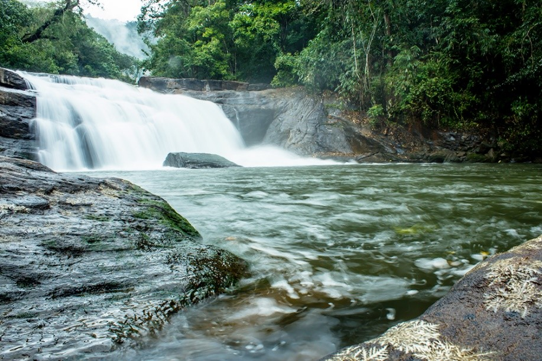

Kurinjimala Sanctuar
Kurinjimala Sanctuary protects the approximately 32 km2 core habitat of the endangered Neelakurinji plant in Kottakamboor and Vattavada villages in Devikulam Taluk, Idukki districts.

Thomankoothu waterfalls
Thomankoothu waterfalls is not a single waterfall but a series of 12 falls over a distance of 5 km. It is one of the major eco-tourism centers in Idukki, Kerala.

Cheeyappara Waterfalls
The Cheeyappara Waterfalls is on the Kochi – Madurai Highway in Idukki district, between Neriamangalam and Adimali. The Cheeyappara Waterfall cascades down in seven steps. This place is well known for trekking.